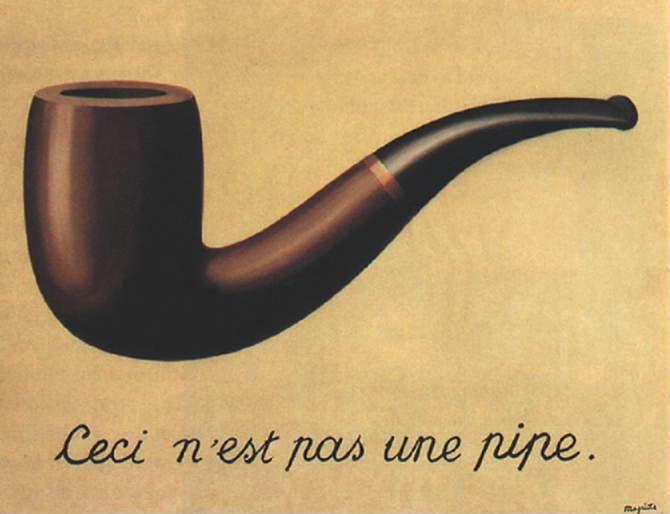
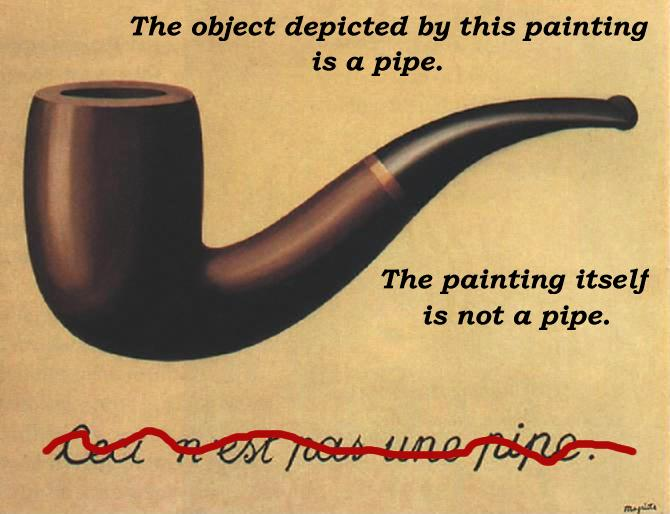

Welcome to my tech talk. I actually plan for this to be the first in a series. The series is called:
And has the subtitle:
To get started, I will use an example:

Actually that text isn't English; it's French. It says "This is not a pipe".
(Question to audience) Who knows why this is paradoxical?
(Question to audience) Who knows why it's not paradoxical?
If you take 'this' to mean the object depicted in the picture, then the text would be wrong, since that thing obviously is a pipe. So either the artist is lying, or was using 'this' to refer to something else. I think what he meant is that the picture itself is not a pipe. To clarify things, he could have written something like:
not a pipe."/>
But art works are more fun when they're full of ambiguities. Ambiguities also form the foundation of many intro to philosophy courses. But they're not usually useful when you're making engineering decisions. So, given that, I'm going to spend this talk prattling on about how the world will make more sense and your programs will be more 'robust' if you make sure to define what exactly it is you're talking about.
So, assuming I actually do get around to doing more of these (which is doubtful), it's going to be kind of like the ISP class they had me take in high school. That class was about a lot of different things but it all tied back into the idea that energy is always conserved, and that you could use that fact to help solve lots of different problems. Similarly, I hope to touch on several topics that I think are interesting and/or useful, but always emphasizing that main idea that by being very precise in your programming you gain a lot of power over the computer and can make it do pretty much anything you want.
Now on to today's sub-topic.
There's a subtitle for this subtopic:
Regarding paying proper attention to character encodings, a wise man once said
IT'S NOT THAT HARD
Joel Spolsky has a really nice article about things like ASCII, Unicode, and UTF-8, but I'm going to go at this from more of a 'just be sure to keep track of how your strings are encoded and everything will work out fine' perspective, skipping over details of specific encodings.
(Question to audience) What's this?
貓
Actually, I need to clarify what I mean by 'this'. I don't mean the pixels on the screen, I don't mean the wall. What I mean is: what do these lines and squiggles represent?
The short answer is that it's the traditional chinese character for 'cat'. It's not a number, it's not a specific picture (since you could draw it many different ways and people would still recognise it as the same character), and it's certainly not an actual cat. Like the letter 'A', it's an abstract object that happens to have a commonly recognised representation and a commonly understood meaning. That bunch of lines projected on the wall is just a way of communicating it to you.
(Question to audience) So how does a computer represent such a thing?
That's kind of a trick question. A computer could represent it lots of ways. It could store a that bunch of lines as a bitmap, or it could store a recording of someone saying the word. But to make things easy, computers usually represent these things as numbers. At least until it's time to show them to a human. Then they turn them into bitmaps and send them to a display device or something. But right now I want to talk about numbers.
The next point being: what's the number for 貓?
If things were all screwed up, everyone and their brother would come up with their own number for each character, and nobody would be able to talk to anyone else. Fortunately for us programmers there's this thing called
Unicode makes deciding what number to use for any given character easy, because it explicitly defines which number goes with each character. That's all Unicode is. A standard, widely-used, character number map. In character set terminology, each of these numbers is called "a code point", by the way.
Here're a few Uni-code points:
| Character | Number |
|---|---|
| A | 65 |
| a | 97 |
| < | 60 |
| 貓 | 35987 |
(Question to audience) Any questions so far?
The next question we need to ask ourselves is: how does the computer represent those numbers? Keep in mind that the numbers for most characters won't fit in 8 bits, and that sometimes you need certain characters to mean special things, like angle brackets in HTML. So this problem is a tad more complicated.
Fortunately, you can still keep things easy simply by being aware of how the characters you are working with are encoded, and what format the program you are sending them to is expecting. If they do not match, then you convert.
So let's start with the simplest case.
In a 'plain text' string, every character means itself. This can be contrasted with things like HTML, where ampersands, angle brackets, and sometimes quotes don't represent actually represent themselves in the document because they are used for metadata and escape sequences. It is also different from literal string syntax in many programming languages where backslashes have a special meaning, and don't actually mean backslash unless you put two of them together, in which case they mean one backslash.
So in that regard, plain text is pretty simple. What makes it tricky is that strings in computers are not usually stored as character sequences, but rather as byte sequences, and therefore...
...we must specify how to interpret bytes as characters, and how to store characters as bytes.
This pair of conversion functions is called a "character encoding", or more generally a 'charset', since 'character encoding' has some connotation of being separate from the mapping of numbers to characters. For the purposes of this presentation I will treat those things as a single step, and therefore will be using the term 'charset'.
There are many charsets to choose from. A lot of problems are caused by people not paying attention to which ones they are using.
Here is a list of some common charsets:
As far as I'm concerned, there's no reason to use anything except UTF-8 except for compatibility. Aside from its ability to represent any unicode character while only using a single byte for characters common in English text, UTF-8 has nice properties that make it easy to deal with even without decoding it, which I'm not going to talk about. A much worse but more common charset is ISO-8859-1, which is often confused with the very similar Windows-1252. Those are single-byte charsets that can only represent 256 different characters.
Now let's complicate matters...
I'm not going to go into HTML structural markup - only about pieces of HTML that represent actual text. i.e. the pieces of the document between the tags.
Parsing text from HTML is one step more complex than reading plain text because not only do you have to translate bytes to characters, but you also have to interpret escape sequences. Since angle brackets and ampersands have special meaning, they must be escaped in HTML text, either as entities or numeric references. But it's perfectly valid to escape any character, even if it has no special meaning.
| Entity | Numeric | Interpreted as |
|---|---|---|
| & | & | & |
| < | < | < |
| A | A | |
| 貓 | 貓 |
Note that if you escape something twice, you will escape the escape sequence. Then you get this:
| Escaped (2x) | Interpreted as |
|---|---|
| &amp; | & |
| &lt; | < |
| &#65; | A |
| &#35987; | 貓 |
You might want to do that if you're talking about HTML syntax in an HTML document. If you don't want to end up with stuff like this, then you need to keep track of what layers of escaping your text has gone though so you don't over-do it.
| JSON | Interpreted as |
|---|---|
| "abc" | abc |
| "\"\t\\" | " \ |
| "\u8C93" | 貓 |
| "\\u8C93 \\\\" | \u8C93 \\ |
| "&" | & |
Same idea here as the table I showed for HTML escapes except here quote and backslash are the escape characters. This chart also shows what happens when you escape your escape characters, and shows the syntax for representing arbitrary unicode characters up to \uFFFF, which is backslash-U followed by 4 hexadecimal digits. Similar to HTML, since 貓 is not an escape character, you could represent it literally in your JSON string, but to do that requires the reader and writer to agree on what charset is being used. Which ideally they would.
The next topic is about how to do that.
HTTP/1.0 200 You're winner X-Editors-Note: Yay for explicit charset! Content-Type: text/html; charset=utf-8 <html><body> <p>I spell cat like 貓</p> </body></html>
Since there's no good way to represent the actual bytes sent on here, I wrote out 貓 as if it were correctly encoded. In this case that would mean using UTF-8, because that's what the content-type header said it was going to be.
HTTP/1.0 200 J00 suxx X-Editors-Note: j/k, actually it's UTF-8 Content-Type: text/html; charset=iso-8859-1 <html><body> <p>I spell cat like À‡ř</p> </body></html>
In this example, the content was still UTF-8 encoded, but the header claimed it was something else. A program reading the response would therefore interpret our 貓 character as something goofy, which isn't what we meant. We could also leave the charset part off of the content-type header completely, in which case the browser would have to guess what character set we were using. Don't do either of these things if you can help it.
HTTP/1.0 200 Ima send y'all explanatory hedazzz X-Editors-Note1: this page will turn out fine as X-Editors-Note2: long as browser picks an ASCII-based X-Editors-Note3: charset, which is pretty likely. Content-Type: text/html <html><body> <p>I spell cat like 貓</p> </body></html>
Sometimes *ahem*schweser*cough* we don't have a lot of control over what the web server says the character set is, or we might be writing parts of existing pages that might have all sorts of screwed up stuff in them, or storing things into a database with no way to indicate what character set they're encoded in. In these cases have to assume that the charset is 'US-ASCII', which is kind of a lowest-common-denominator (assuming nobody's using EBCDIC or anything like that).
But as long as the stuff we're outputting or storing in the database is expected to be HTML or JSON-encoded, we're still able to represent any character we want, by using HTML or JSON escape sequences, respectively.
| Input | The 貓 says "meow" |
|---|---|
| HTML | The 貓 says "meow" |
| JSON | "The \u8C93 says \"meow\"" |
| Text | The [cat] says "meow" |
So note here that if we're writing something out as plain text, ASCII-encoded, we simply can't represent that chinese character. But we can get around our charset limitation by using escape sequences of a higher-level encoding.
Unfortunately, there's no way to force the PHP htmlentities function to take UTF-8 input and escape all non-ASCII characters. There're some functions that would do things like that floating around the comments section of the page for that function on PHP.net, but I tried one and it was buggy. We should probably just go ahead and write one.
I think that about does it. Any questions?